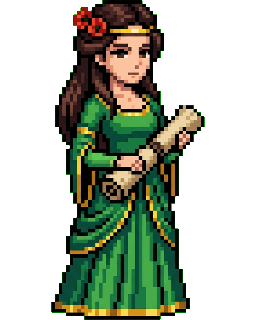
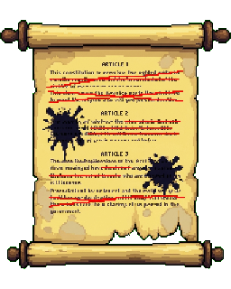
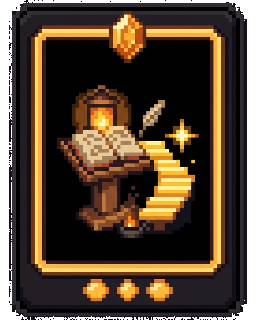
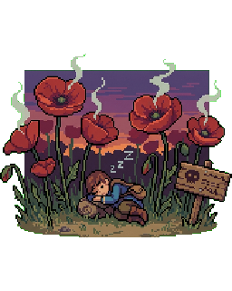
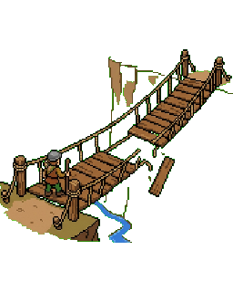
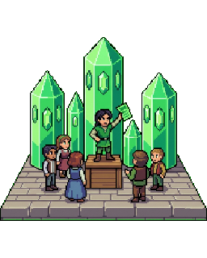
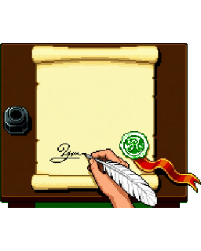

The Emerald Constitution
The Wizard is gone — carried off in his own balloon — and Princess Ozma has found his old constitution in a desk drawer. It is, she says diplomatically, "a document with problems." She's convening a council to rewrite it. You're on the council.
Use → (or Next) to advance and to reveal points one at a time. F = fullscreen.
Before the First Session
Five gut-checks — no right answers. Say where you stand; the council will revisit them when the new constitution is ratified.
The government may forbid adults from doing things that harm only themselves.
Being deeply offended by something is a kind of harm.
A doctor should be able to override an adult patient's foolish-but-informed choice.
Vaccine mandates are a violation of personal liberty.
Some things should be illegal simply because they are immoral.

The Wizard's Handiwork
Ozma reads clauses aloud. The old law lurches between two opposite failures:
- Smothering: green spectacles locked onto every citizen "for their comfort"; travel to the Deadly Desert quadrants forbidden "for their safety."
- Absent: the sleep-inducing poppy fields have no fence or warning sign; market vendors may sell anything as anything.
- The Scarecrow puts it best: "It protects us from ourselves and abandons us to each other. Shouldn't it be the reverse?"

The Council Consults a Book
Glinda produces a slim volume from the Great Book of Records' library: On Liberty (1859), by John Stuart Mill.
- Mill's worry wasn't only tyrant kings — Oz has had those. It was the "tyranny of the majority": a whole society pressing everyone into the same mold, by law and by social pressure.
- His question is exactly the council's question: when may the community rightfully use power over one of its members?
- His answer, he warns, is "one very simple principle."
One Very Simple Principle
"The only purpose for which power can be rightfully exercised over any member of a civilized community, against his will, is to prevent harm to others."
- And the exclusions, in Mill's own words: "His own good, either physical or moral, is not a sufficient warrant."
- You may reason with a person, plead with them, warn them — but not compel them, for their own sake.
- "Over himself, over his own body and mind, the individual is sovereign."
- Caveats Mill states up front: the principle applies to people "in the maturity of their faculties" — not children, and not those unable to reason for themselves.
Why Should Oz Believe This?
Mill doesn't appeal to natural rights. He's a utilitarian — liberty has to earn its keep. His case:
- Fallibilism: any authority that overrides people bets on its own infallibility — and the Wizard, so certain about those spectacles, was a fraud.
- Experiments in living: nobody knows in advance which ways of life work, so letting people try is how a society learns.
- Individuality: choosing for yourself is part of flourishing — a person steered like a puppet doesn't flourish, even if steered well.
- That's the heart of liberalism: the state protects each person's liberty and stays neutral about what a good life looks like.
The First Vote
The missing rules about the sleep-inducing poppy fields
The mandatory green spectacles, worn for citizens' own cheerfulness
The lack of any honesty rules for Emerald City market vendors
The Council's Minutes
Power may be used over a citizen against their will only to prevent
harm to
others;
their own good is not a sufficient warrant.
Compelling people for their own good is called
paternalism.
The Line Everything Depends On
The whole principle turns on one distinction — and the Tin Woodman immediately spots the problem: "Almost nothing I do touches only me."
Affects primarily you — your body, your tastes, your risks, your plans. Society may advise, warn, and disapprove, but not compel.
A Winkie who eats nothing but turnips, gambles his own wages, or climbs dangerous peaks alone.
Causes or seriously risks harm to others — their bodies, property, or rights. Here law and social power are legitimate.
A Winkie who dumps forge-slag in the river, swings his axe in a crowd, or sells turnips he knows are spoiled.
Mill concedes the boundary is contested — his own critics pressed hard on it. Acts that "harm only me" often cost families, rescuers, and public funds. Hold that thought for Act 5.

The Poppy Question
The council reaches Oz's drug policy: the poppy fields, whose fumes bring days of dreamless sleep — and to which some citizens keep returning on purpose.
- Tin Woodman: "Ban entry entirely. People are hurting themselves." A ban on informed adults' self-regarding choice — paternalism.
- Cowardly Lion: "No rules at all is also wrong — travelers wander in without knowing." True: the uninformed are a different case.
- Mill's actual position on dangerous substances: no prohibition for competent adults, but labeling, warnings, and regulated sale are fine — they inform choice rather than replace it.
- The council's draft: fence and signpost the fields, register the guides, ban bringing children in — and let informed adults walk in.

Mill's Bridge
Mill's own example, relocated to the gorge outside the Emerald City: a traveler is about to cross a bridge you know is unsafe. There's no time to warn him. May you seize him?
- Mill says yes — "liberty consists in doing what one desires, and he does not desire to fall into the river." He wants to cross, not to drown. Stopping him serves his own will.
- Once he knows the danger, though, the case flips: an informed adult who still chooses to cross must be let through.
- This is the seed of soft paternalism: intervening to ensure a choice is informed and voluntary is permitted; overriding a choice that is informed and voluntary — hard paternalism — is not.
Marking Up the Draft
All poisons sold in the market must carry a clear warning label
A soldier of the palace guard found drunk while on watch shall be punished
Any citizen found drunk in their own home shall be fined for self-neglect
All citizens shall practice temperance, for the good of their own character
The Council's Docket
A stack of the Wizard's clauses awaits review. For each: is it preventing harm to others (keep), preventing harm to self (strike — paternalism), or enforcing morality (strike — legal moralism)?
No forge shall discharge slag or quenching-water into the Munchkin River.
No citizen shall climb the peaks of the Quadling Range without a licensed companion, for their own safety.
Games of cards and dice are forbidden, as they corrupt the character of those who play.
No wagon shall be driven faster than a trot within the Emerald City walls.
All citizens shall wear the green spectacles within the city, for their own comfort and cheerfulness.
No vendor shall knowingly sell spoiled or misdescribed goods in the market.

The Pamphleteer of Emerald Square
A pamphleteer has been writing that the Munchkin bakers starve the poor. The bakers demand a ban. Mill devotes his longest chapter to exactly this.
- Mill's version: opinions that corn-dealers starve the poor should circulate freely in the press —
- — but "may justly incur punishment when delivered orally to an excited mob assembled before the house of a corn-dealer."
- Same words, different act: printed argument invites deliberation; the same sentence shouted to a torch-bearing crowd outside the bakery is instigation — the first step of an assault.
- The line isn't the content of the opinion. It's whether the circumstances make the expression a positive incitement to harm.
"But What If the Pamphlet Is Wrong?"
The bakers press on: the pamphlet is false. Why protect falsehood? Mill's three-part answer:
- If the silenced opinion is true, Oz loses the truth. (The Wizard silenced everyone who said he was a humbug. They were right.)
- If it's partly true, the accepted view gets its missing piece only through collision with it.
- Even if it's wholly false, the true view — never challenged — decays into dead dogma: recited, not understood. The bakers should be able to answer the pamphlet, and their answer will teach the city more than a ban would.
The Night It Almost Went Wrong
The circumstances turn the words into instigation of immediate harm
The claim has now been proven false, which removes its protection
The bakers' feelings are now hurt badly enough to count as harm
A Council Tangent
The Cowardly Lion raises a hand: "What about things that harm no one but are deeply offensive? The Growleywogs picket funerals. It's vile. Can't we ban that?"
Hear the tangent (Feinberg's offense principle)
Keep to the agenda
Feinberg's Offense Principle
A century after Mill, Joel Feinberg argued the Harm Principle needs a carefully limited supplement: some conduct harms no one yet may still be regulated.
- Offense ≠ harm: disgust, shame, and outrage pass; they don't set back anyone's interests the way injury, theft, or fraud do.
- But some offenses are so profound, public, and unavoidable — conduct you cannot reasonably escape, like a protest at your child's funeral — that a liberal state may restrict them.
- Feinberg's balancing tests: how intense and widespread is the offense? Could bystanders reasonably avoid it? Is the conduct's value low and the offense its very point?
- The council's compromise, Feinberg-style: the Growleywogs may say what they like — at a distance, not inside the funeral procession. Time-place-manner rules, not content bans.
- The live worry: "offense" is elastic. The Wizard found everything critical of him offensive. A principle that stretches that far stops being liberal at all — which is why Feinberg hedged it so heavily.
The Health Chapter
The council turns to medicine — where the old constitution's split personality is at its worst.
- Smothering: "Any citizen refusing a physician's prescribed remedy shall receive it under restraint, for their own recovery."
- Absent: when sleeping-sickness swept the Gillikin Country, the old law said… nothing. No quarantine powers, no reporting, no vaccine program.
- The same two failures as everywhere else: compelling the informed individual, abandoning the endangered public.
The Right to Refuse
First case: a competent Winkie elder declines the surgery her physician urges. She understands the odds. She'd rather live shorter, at home.
- Under the old clause, she'd be treated "under restraint, for her own recovery" — hard paternalism, in its purest form.
- Mill's verdict is immediate: her body, her sovereignty. Physicians may inform, urge, plead — the bridge move, making sure the choice is informed — but not compel.
- This is the same conclusion modern medical ethics reaches through autonomy and informed consent (as in the patient-autonomy and four-principles lessons) — Mill is one of the deep roots of that consensus.
Strike or Keep?
Keep it: the bridge case shows we may always stop people from harming themselves
Keep it: her family's grief at losing her sooner counts as harm to others
Strike it: an informed refusal of one's own treatment is self-regarding
The Gillikin Epidemic
Second case: sleeping-sickness returns, and an effective vaccine exists. The Tin Woodman braces for another paternalism fight — but this one is different.
- Refusing a vaccine isn't like refusing surgery. An unvaccinated citizen who catches the sickness transmits it — to infants, to the frail, to those who medically can't be vaccinated.
- Infection is other-regarding. The Harm Principle doesn't merely tolerate public-health powers here — it's the very ground for them.
- So a liberal can consistently strike the forced-surgery clause and support a vaccine mandate in an epidemic. The two cases sit on opposite sides of Mill's line.
- Care still matters: mandates should be proportionate to the actual threat — the tool is legitimate, not unlimited. Quarantining the contagious is the clearest case of all.
The Wagon-Harness Debate
Third case: should the law require safety harnesses in fast wagons? The council splits — and the argument shows how the "other-regarding" category expands under pressure.
An unharnessed driver risks only his own neck. Mandating the harness compels a competent adult for his own good — the green spectacles all over again, just better-intentioned.
"Post the injury figures at every wagon-yard. Then let drivers choose."
The injured driver doesn't crash alone: rescuers take risks, the public purse pays the healers, a family loses its provider. Diffuse costs to others make it other-regarding.
"No one is a lone wagon. The 'self-regarding' box is smaller than it looks."
Notice the danger in the second move: run far enough, it makes everything other-regarding and hands back all the power Mill took away. Where you stop this argument largely determines what kind of liberal you are.
Voting the Health Chapter
Citizens contagious with sleeping-sickness may be quarantined during an outbreak
Sellers of tonics and remedies must state their contents and known risks truthfully
A competent adult who refuses treatment shall receive it under restraint
Informed adults may volunteer for risky medical research that has honest consent
When Is a Choice Really Yours?
Late session. The Lion reports the poppy guides now design the fields — winding paths, no visible exits, fumes strongest by the ticket booth. Visitors "choose" to stay far longer than they meant to.
- The principle protects voluntary, informed choices — but addiction and engineered temptation erode exactly the voluntariness doing that work.
- Soft paternalism's modern frontier: if the field is built to defeat your judgment, is walking in still your choice? (Echoes: loot boxes, infinite scroll, casino floors.)
- The liberal response targets the design and the deception, not the informed user. The offense is rigging the choice, not making one.
Harms With No Single Victim
The first problem the 1859 text never faced at scale: diffuse harm.
- One forge's smoke harms no one measurably. Five hundred forges choke the whole Munchkin valley.
- Each act is nearly self-regarding; the aggregate is a catastrophe for others.
- The principle still applies — but only if it can count contributions to a collective harm, not just one-to-one injuries.
When Speech Outruns the Answer
The second: misinformation — say, a pamphlet falsely declaring the vaccine poisonous.
- Mill's machinery says answer it, loudly — dead dogma dies without challengers.
- But when false speech spreads faster than any answer, and the cost lands on third parties (the infected), the corn-dealer line gets genuinely hard to draw.
- Neither case refutes Mill. They're where the principle stops being an algorithm and becomes a framework for argument.
The Council's Dissenters
Ozma insists the dissents be read into the record. Each names a real tradition:
- Glinda — perfectionism: "Law should help citizens become good, not merely unharmed." (Roots in the virtue-ethics lesson's Aristotle.)
- The palace judge — legal moralism: "A shared morality holds a society together; law may enforce it." (Devlin pressed this in the 1950s; Hart pressed back, and is generally scored the winner.)
- The Munchkin — communitarianism: "The 'sovereign individual' is a myth; selves are made by communities, with victims the principle can't see."
- The liberal reply: every one of those was the Wizard's warrant too. The principle survives as a presumption — liberty is the default, and the burden falls on whoever would compel.
The Hardest Vote
Legal moralism: the fields corrupt the character of those who linger
Soft paternalism: engineered manipulation defeats informed, voluntary choice
Hard paternalism: lingerers must be protected from their own decisions
The Drafting Committee's Glossary
Overriding an informed adult's choice for their own good is
hard paternalism;
stepping in only to ensure a choice is informed and voluntary is
soft paternalism.
Banning conduct because it is immoral, though it harms no one, is legal
moralism.
In the liberal tradition, liberty is the default,
and the burden of proof falls on whoever would compel.

Ratification Day
The new Emerald Constitution opens: "Over themselves, over their own bodies and minds, the citizens of Oz are sovereign. The Crown's power reaches only the harm they may do one another."
- Struck: the green spectacles, the travel ban, forced treatment, the gambling ban.
- Added: river protections, market honesty rules, quarantine powers, poison labels, the anti-manipulation rule for the poppy fields.
- Kept open: the wagon-harness question — tabled for next session, on the record as "the self/other line, disputed." Some constitutional questions stay live; that's a feature.
- The Scarecrow's summary: "It protects us from each other, and trusts us with ourselves."
Revisit Your Instincts
Here's where you stood before the first session. Re-rate each — has the council's work moved you? Staying put is fine; can you now defend the spot with Mill's vocabulary?
The Council Adjourns
Ozma seals the scroll. The old constitution goes to the museum, next to the green spectacles.
- The Harm Principle — power over a person against their will only to prevent harm to others; their own good is never sufficient warrant.
- Why liberty — fallibilism, experiments in living, individuality: Mill's utilitarian case, and the core of liberalism.
- The line — self- vs other-regarding conduct, and the bridge case's split between soft and hard paternalism.
- Speech — even false opinions stay protected; circumstances, not content, turn words into instigation.
- Bioethics — refusal of treatment is self-regarding; contagion is not; manipulation undermines the voluntariness everything rests on.
- The live edges — collective harms, engineered choices, offense, and the critics who'd trade liberty for virtue or cohesion.
Visit every slide, answer every question, and submit both belief probes to complete the session.